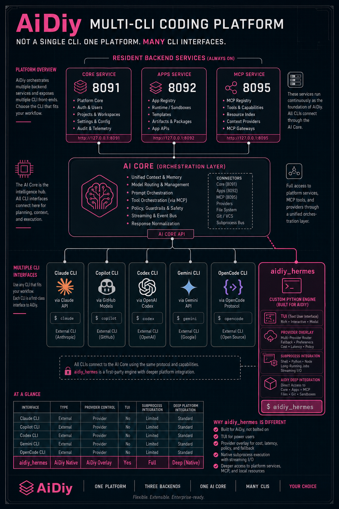

AiDiy は Core / Apps / MCP を常駐分離しつつ、AIコアの Code AI では複数 CLI を切り替えられます。backend_hermes はその中でも AiDiy 専用に組み込まれた独自実装です。
Code AI の有効値には `claude_sdk`、`claude_cli`、`copilot_cli`、`codex_cli`、`gemini_cli`、`opencode_cli`、`aidiy_hermes` が含まれる。
`backend_hermes` は AiDiy に統合された on-demand のコードエージェント CLI で、常駐 HTTP サーバーではない。
`cli_main.py` の provider は API provider と CLI bridge の両方を扱い、31 の provider overlay と 50 以上の alias を持つ。
Code AI の有効値は `claude_sdk`、`claude_cli`、`copilot_cli`、`codex_cli`、`gemini_cli`、`opencode_cli`、`aidiy_hermes` を想定します。
`backend_hermes` は AiDiy に統合された on-demand のコードエージェント CLI です。`cli_main.py` の provider は API provider と CLI bridge の両方を扱います。